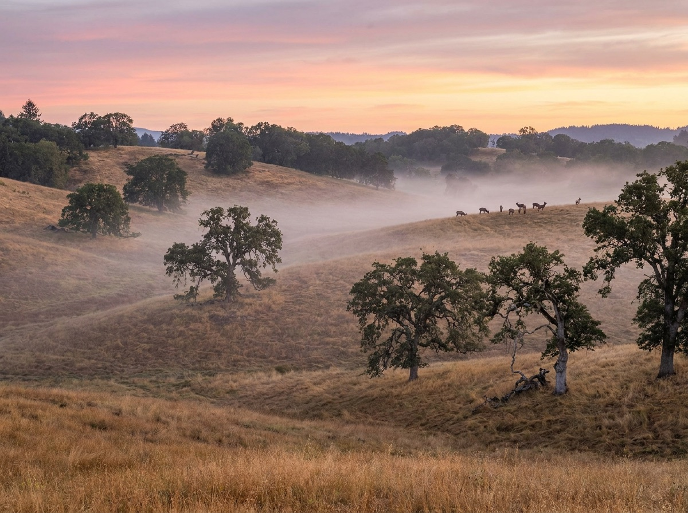

If your plan is to find hunting property in the Umpqua area, local knowledge isn't optional — it's the whole game.

What does that mean on the ground in Umpqua? Riverfront hay ground, estate-quality building sites, and small vineyards. Water rights and river frontage drive value here — verify both before you ever write an offer.
Kimmy pairs that community knowledge with deep hunting land expertise. Roosevelt elk, blacktail deer, turkey, bear, and waterfowl — Douglas County offers some of western Oregon's best hunting, and owning your own ground changes everything. Kimmy hunts and fishes this county herself and evaluates recreational land the way a hunter does: feed, water, cover, and pressure.
The community of Umpqua occupies some of the most beautiful ground in the county — where the Umpqua River makes its lazy bends past Henry Estate Winery and the hay is cut and baled by July. It's quiet, pastoral, and coveted.
| Population | ~300 |
| Drive to Roseburg | 20 minutes |
| Known for | Henry Estate Winery · Umpqua River · Tyee Road scenic corridor |
| Lifestyle | Winery dinners, river floats, and sunsets over the Tyee hills. |
You want an agent who combines genuine hunting land expertise with parcel-level Umpqua knowledge. Kimmy Karlovich lives the rural Douglas County life daily — horses, land, hunting, rivers — and serves Umpqua as core territory (about 20 minutes from her Roseburg base). Call 541-643-9509 for a straight local conversation.
Oregon's Landowner Preference program generally requires at least 40 contiguous acres to qualify for deer and elk LOP tags, with tag numbers scaling by acreage. Kimmy confirms eligibility details with ODFW rules for the specific unit before you buy.
Primarily the Melrose and Dixon units, with others at the county's edges. Each has its own seasons, tag structure, and draw odds — and the same parcel can hunt very differently depending on which side of a unit line it sits.
Owning ground that borders BLM or Forest Service land can give you walk-in access others can't easily get — a huge recreational premium. Kimmy verifies actual legal adjacency through mapping, not listing-flyer claims.
Whether you're buying your first five acres or selling the ranch that raised you — call, text, or email. Kimmy answers.
541-643-9509